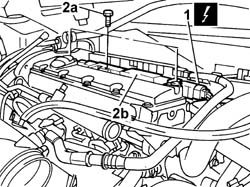
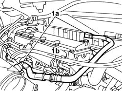
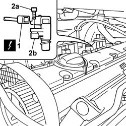
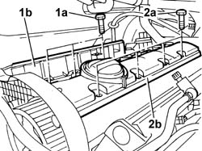
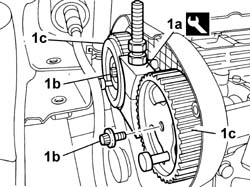
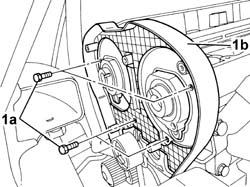
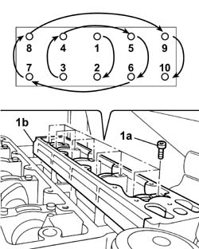
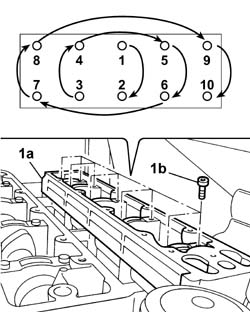
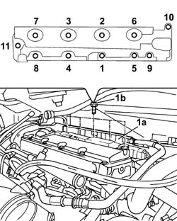

1036G20 CAMSHAFT CONTROLLING INTAKE VALVES IN TOP HEAD - R + R WITH TOP HEAD REMOVED - INCLUDES REPLACEMENT OF TOP HEAD IF NECESSARY
- Path
- Procedures > 10 ENGINE > 1036 TIMING SYSTEM > 1036G CAMSHAFT (1) IN CAMSHAFT HOUSINGS (2) > 1036G20 CAMSHAFT CONTROLLING INTAKE VALVES IN TOP HEAD - R + R WITH TOP HEAD REMOVED - INCLUDES REPLACEMENT OF TOP HEAD IF NECESSARY
- Kind
- repair procedure (removal / refitting; the operation number is the code)
- Applies to
- engines: 2.0 16v; all production periods
- Interactive page
- https://sloeber94.github.io/elrnDB-fUlss/en/#/179006960
Applies to: engines: 2.0 16v; all production periods
 Removing
Removing
 Refitting
RefittingOp. 5530B56 BATTERY DRIP TRAY COVER - R.R.
- Disconnect the negative battery terminal.
Op. 5010B18 CLIMATE CONTROL UNIT AIR INTAKE - R.R.
Op. 1048A39 SLEEVE FROM AIR CLEANER TO RIGID PIPE - R R
See in Op. 1048A10
See in Op. 1088B10
Op. 7055B54 UNDER-ENGINE GUARD - R R
Op. 4450B04 RIGHT FRONT WHEEL R R
Op. 7055B91 RIGHT FRONT WHEEL ARCH LINER - R.R.
Op. 4410D16 BRACKET (ONE) RETAINING CHASSIS TO BODY - R R
- < R1 > [Right side, front]
See in Op. 1092G10
See in Op. 1092A10
See in Op. 1032D12
See in Op. 1032B10
See in Op. 1008C10
See in Op. 1008A46
1. Disconnect the electrical connection for the windscreen wiper motor.
2. Undo the retaining bolts (2a) and remove windscreen wiper motor (2b).
Applies to: engines: 2.0 16v; all production periods
1. Rotate the fastening pins (1) through 90° and remove the coil cover (1b).
Applies to: engines: 2.0 16v; all production periods
1. Disconnect the electrical connection for the coils.
2. Undo retaining bolts (2a) and remove the coils (2b).

Applies to: engines: 2.0 16v; all production periods
1. Disconnect the rapid connectors (1a) from the oil vapour separator and from the rigid air inlet hose on the throttle casing and move the pipe (1b) aside.

Applies to: engines: 2.0 16v; all production periods
1. Disconnect the electrical connection for the cam angle sensor.
2. Undo the fixing bolts (2a) and remove the cam angle sensor (2b).

Applies to: engines: 2.0 16v; all production periods
1. Undo the fixing bolts (1a) and remove the exhaust side tappet cover with built in oil separator cover (1b).
2. Undo the fixing bolts (2a) and remove the inlet side tappet cover (2b).

Applies to: engines: 2.0 16v; all production periods
1. Using the tool (1a), lock the pullies, undo the fixing bolts (1b) and remove the pullies (1c).
 | Description | Code | Function |
|---|---|---|---|
1a | Counter-torque | 1.860.807.000 | Locking toothed driven pullies |
Applies to: engines: 2.0 16v; all production periods
1. Undo the retaining bolts (1a) and remove the rear guard for the driven timing pullies (1b).

Applies to: engines: 2.0 16v; all production periods
1. Undo the fixing bolts (1a) following the order illustrated in the diagram and remove the right camshaft housing (1b).

Applies to: engines: 2.0 16v; all production periods
1. Remove the valve drive gear camshaft from the right camshaft housing.

Applies to: engines: 2.0 16v; all production periods
Refitting
Removing- Fit the valve drive gear camshaft in the right camshaft housing.
- Thoroughly clean the matching surfaces and renew the sealant on the fitting surface.
1. Place the right camshaft housing (1a) in position and tighten the fixing bolts (1b) following the order illustrated in the diagram.
 | Value - daNm | Fastening | Component | Ø |
|---|---|---|---|---|
. | 0.5 + 1 | Bolt | RIGHT CAMSHAFT HOUSING - Replace gasket | - |

Applies to: engines: 2.0 16v; all production periods
- Fit the driven pullies rear guard.
- Tighten the bolts fixing the rear guard for the pullies.
- Fit the pullies without tightening the fixing bolts.
- Fit the counter-torque tool to lock the pullies and tighten the fixing bolts to torque.
| Description | Code | Function |
|---|---|---|---|
1a | Counter-torque | 1.860.807.000 | Locking toothed driven pullies |
1. Fit the tappet cover with built in oil vapour separator (1a) and tighten the fixing bolts (1b) to torque in the order illustrated in the diagram.
| Value - daNm | Fastening | Component | Ø |
|---|---|---|---|---|
. | 0.5 + 1 | Bolt | TAPPET COVER with built in oil vapour separator | - |

Applies to: engines: 2.0 16v; all production periods
1. Fit the left tappet cover (1a) and tighten the tappet cover fixing bolts (1b) following the order illustrated in the diagram.
| Value - daNm | Fastening | Component | Ø |
|---|---|---|---|---|
. | 0.5 + 1 | Bolt | Left TAPPET COVER - R.R. and Replace gasket | - |
Applies to: engines: 2.0 16v; all production periods
- Fit the cam angle sensor and tighten the fixing bolt.
- Connect the electrical connection for the cam angle sensor.
- Connect the rapid connectors for the pipe to the oil vapour separator and to the rigid air inlet hose on the throttle casing.
- Fit the coils and tighten the fixing bolts.
- Connect the electrical connection for the coils.
- Fit the coil cover and renew the fastenings.
- Fit the windscreen wiper motor and tighten the fixing bolts.
- Connect the electrical connection for the starter motor.
See in Op. 1008A46
See in Op. 1008C10
See in Op. 1032B10
See in Op. 1032D12
See in Op. 1092A10
See in Op. 1092G10
Op. 4410D16 BRACKET (ONE) RETAINING CHASSIS TO BODY - R R
- < R1 > [Right side, front]
Op. 7055B91 RIGHT FRONT WHEEL ARCH LINER - R.R.
Op. 4450B04 RIGHT FRONT WHEEL R R
Op. 7055B54 UNDER-ENGINE GUARD - R R
See in Op. 1088B10
See in Op. 1048A10
Op. 1048A39 SLEEVE FROM AIR CLEANER TO RIGID PIPE - R R
Op. 5010B18 CLIMATE CONTROL UNIT AIR INTAKE - R.R.
- Connect the negative battery terminal.
Topics linked from this page (8)
- 0010T21 ENGINE COOLANT - CHECK DENSITY AND CHANGE, IF NECESSARY
- 1048A39 SLEEVE FROM AIR CLEANER TO RIGID PIPE - R R
- 4410D16 BRACKET (ONE) RETAINING CHASSIS TO BODY - R R
- 4450B04 RIGHT FRONT WHEEL R R
- 5010B18 CLIMATE CONTROL UNIT AIR INTAKE - R.R.
- 5530B56 BATTERY DRIP TRAY COVER - R.R.
- 7055B54 UNDER-ENGINE GUARD - R R
- 7055B91 RIGHT FRONT WHEEL ARCH LINER - R.R.